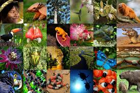

Explore a riqueza natural, a biodiversidade e os desafios de uma das maiores florestas do planeta
Sobre a Amazônia
A Floresta Amazônica cobre cerca de 5,5 milhões de km² e se estende por nove países sul-americanos, sendo o Brasil o detentor de aproximadamente 60% de sua área. É um dos principais ecossistemas do planeta, fundamental para o equilíbrio climático global.
A floresta desempenha papel vital na produção de oxigênio, regulação do ciclo da água e abriga milhares de espécies de flora e fauna. Além disso, a Amazônia é o lar de centenas de comunidades indígenas com vasto conhecimento ecológico e cultural.
Biodiversidade
Estima-se que mais de 30 mil espécies de plantas, 1.300 espécies de aves, 430 de mamíferos e milhões de insetos vivam na Amazônia. Muitas dessas espécies ainda não foram catalogadas.

Entre os animais emblemáticos da região estão a onça-pintada, o boto-cor-de-rosa, a arara-azul e o tamanduá-bandeira. A flora inclui árvores gigantes como a seringueira, o castanheiro e a vitória-régia.
Ameaças
A Amazônia enfrenta diversas ameaças, principalmente causadas por ações humanas:
Desmatamento: causado pela expansão agropecuária e exploração ilegal de madeira.
Queimadas: provocadas para limpar áreas e ampliar pastagens.
Garimpo ilegal: contamina rios com mercúrio e degrada o solo.
Grandes obras: como hidrelétricas e estradas que fragmentam habitats.
Essas práticas colocam em risco não só o ecossistema local, mas também o equilíbrio climático global.
Curiosidades
O rio Amazonas é o maior em volume de água do mundo.
A floresta já existia há mais de 55 milhões de anos.
Mais de 400 povos indígenas habitam a região, muitos com línguas e culturas próprias.
A Amazônia produz cerca de 20% do oxigênio atmosférico do planeta.